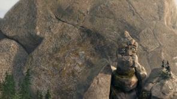

0:47 · 1 OPERA
Quando un cartone animato dice più di mille commentatori...
Il contenuto del filmato
L’animazione mostra un gigante di roccia e un enorme masso in un paesaggio montuoso sopra il mare, presso un piccolo borgo fantastico. La versione archiviata presenta simboli politici e religiosi: una stella blu a sei punte sul gigante, una bandiera israeliana e scritte arabe sul masso. I campioni successivi comprendono il personaggio presso gli edifici, frammenti e polvere, poi una veduta in cui il borgo è quasi interamente sotto l’acqua. La base animata è identificata probabilmente con A Tale of Momentum & Inertia, il corto di Kameron Gates prodotto da HouseSpecial, mediante il personaggio, il masso e il paesaggio, riscontrati nelle fonti del produttore e del regista. Questo collegamento non attribuisce loro il rimontaggio politico qui archiviato. La lettura del filmato come allegoria di rapporti internazionali appartiene a questa versione: non documenta eventi reali e non rende una popolazione o una religione equivalente al personaggio o alla minaccia raffigurata.
Opere e riferimenti

A Tale of Momentum & Inertia
Identificazione probabile
Note sul riferimento
Miniatura ufficiale del cortometraggio da HouseSpecial; non locandina né versione politica: Miniatura ufficiale del cortometraggio da HouseSpecial; non locandina né versione politica
Miniatura del corto originale caricato da HouseSpecial il 10 settembre 2014 secondo metadati ufficiali Vimeo. Il personaggio e il masso corrispondono alla base animata; simboli politici e autore del rimontaggio restano distinti.
Identificazione probabile della base animata per corrispondenza di gigante, masso e borgo con miniatura e crediti ufficiali HouseSpecial. La versione archiviata contiene simboli politici e non è il corto originale completo.
La descrizione riguarda alcune immagini del filmato. Il sonoro non è verificato; le didascalie visibili non attestano le parole pronunciate.